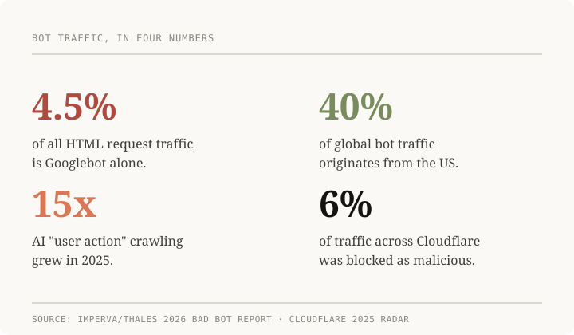

More than half the web's traffic isn't human
We crossed a milestone most people do not know about: automated bots now account for more than half of all global web traffic. Imperva/Thales's 2026 Bad Bot Report put that number on the record in April, and it has been quietly rippling through the security and infrastructure world since.
The numbers that matter:

Googlebot alone is 4.5% of all HTML request traffic on the web, more than a quarter of all verified bot traffic. A single IP block generates nearly four times the traffic of the next largest source.
AI "user action" crawling grew 15x in 2025. These are not simple page fetchers. They click, scroll, fill forms, and simulate human browsing. They are increasingly indistinguishable from real users.
40% of global bot traffic originates from the US. AWS and Google Cloud together account for a quarter of all bot traffic worldwide.
6% of all traffic crossing Cloudflare's network was blocked as malicious in 2025: DDoS, credential stuffing, scraping.
Why it matters beyond the stats: the real story is not that bots exist. It is the feedback loop. Bots train on content. Bots generate content. That content gets crawled by more bots. Human-created work has to compete with millions of algorithmically optimized pages for ranking, attention, and ad revenue.
The economic effects are already visible. Advertisers pay for bot views, billions a year on impressions that reach no human. Search results increasingly rank AI-generated content, making authentic sources harder to find. API abuse and credential stuffing scale with bot volume, and traditional defenses like CAPTCHA and rate limiting are losing ground against bots that mimic human behavior.
The uncomfortable question: when most of the traffic, content, and interaction on the open web is machine-generated, what does an authentic online presence even mean? For builders, marketers, and operators, understanding bot traffic is no longer just a security concern. It is how the internet works now.
This is why authenticity is becoming the new premium. The most valued operators moving forward will not just be the ones using AI. They will be the ones who know how to leverage AI inside a strict human-in-the-loop framework, and who can tell factual, high-signal content from algorithmic slop. When the open web is drowning in machine-generated filler, the ability to source, verify, and deliver real human expertise is a competitive advantage.
AI has a role, and it is a big one. But it works best as a force multiplier under human control, not as a substitute for judgment. The operators who get trusted are the ones who treat AI as leverage and keep a human in the loop on the calls that matter.